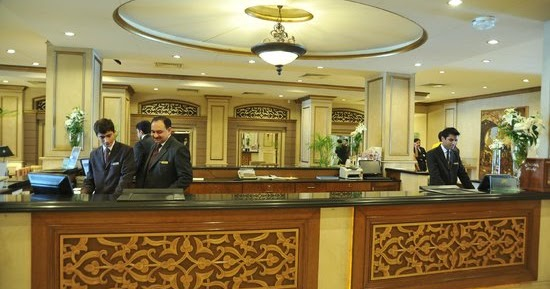

Hyatt Hotels Corporation, commonly known as Hyatt Hotels & Resorts, is an American multinational hospitality company headquartered in the Riverside Plaza area of Chicago that manages and franchises luxury and business hotels, resorts, and vacation properties. Hyatt Hotels & Resorts is one of the businesses managed by the Pritzker family. The Hyatt Corporation came into being upon purchase of the Hyatt House, at Los Angeles International Airport, on September 27, 1957. In 1969, Hyatt began expanding internationally. Hyatt has grown by developing new properties and through acquisitions, with the biggest growth coming from the acquisition of AmeriSuites (later rebranded Hyatt Place) in 2004, Summerfield Suites (later rebranded Hyatt House) in 2005, and Two Roads Hospitality in 2018.
Explore the range of services we offer...
Get in touch with us...